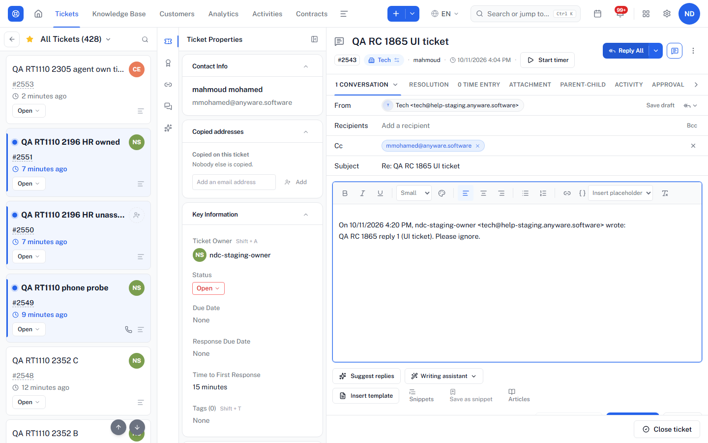
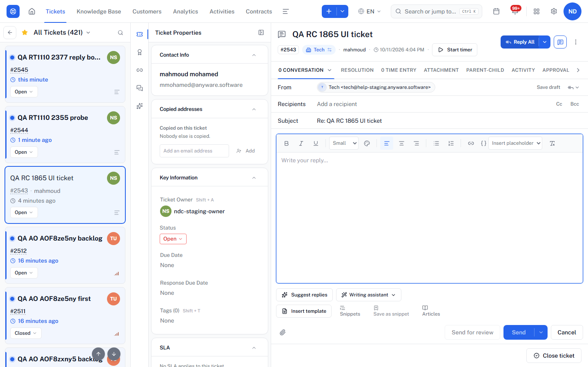
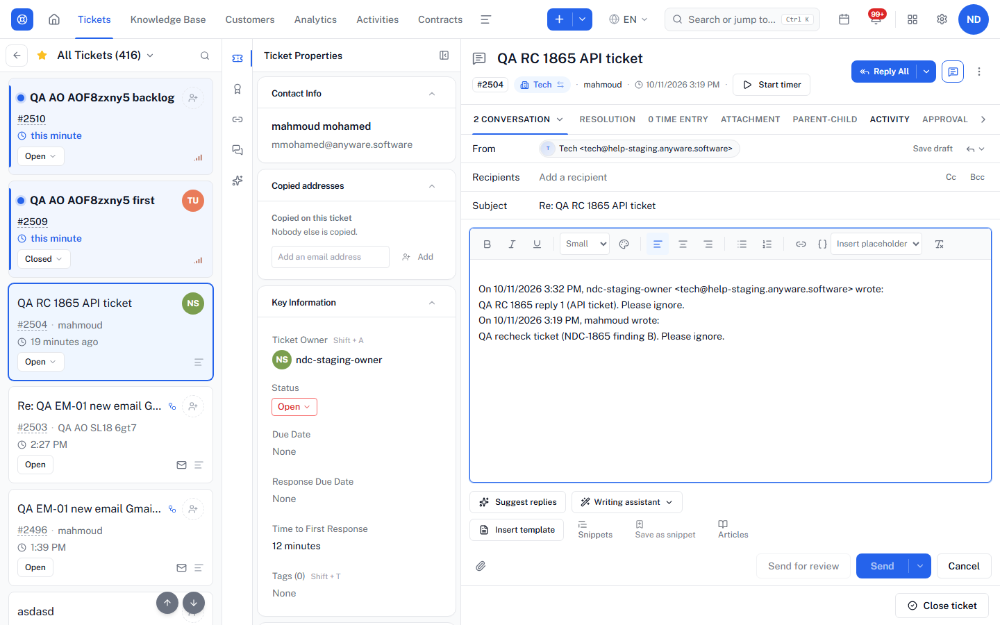
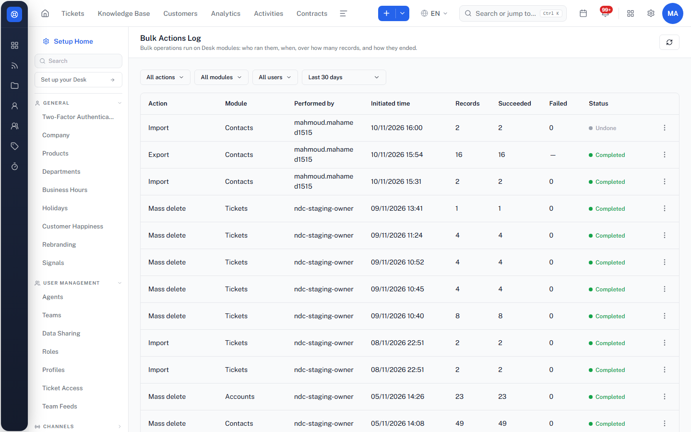
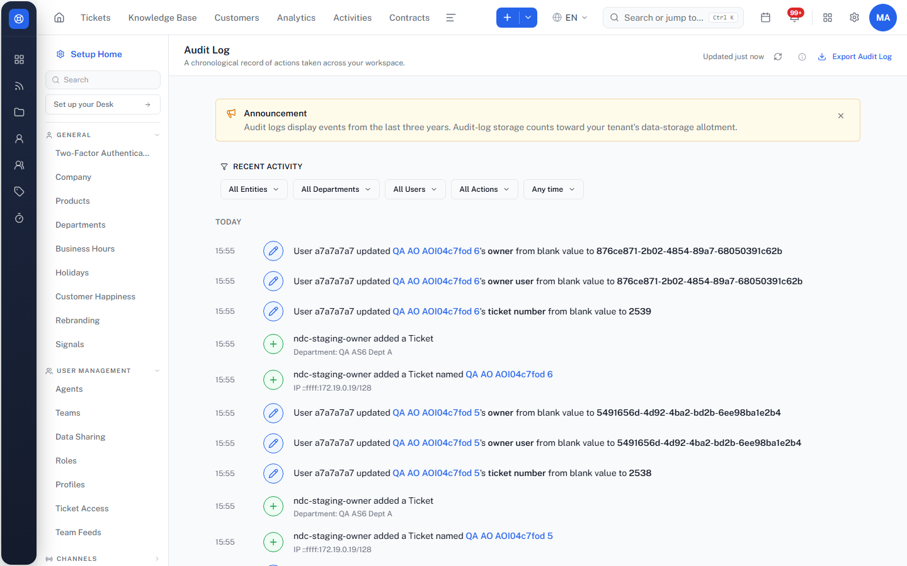

Open items and new bugs after Lanes I, J and K
Status of every finding
| # | Finding | Lane | Verdict | Next step |
|---|---|---|---|---|
| A | Assignment rules skip a ticket that keeps the default owner | — | Filed | Already NDC-2840 |
| B | Reply All / Reply leave "To" empty | I | Still reproduces | File (Medium) |
| C | Email template subject not used in a reply | J | Same as Zoho | Drop |
| D | Deleting a Desk contact leaves the CRM copy | J + your screenshots | Works as configured | Drop — Preferences "Never delete the corresponding CRM contact", same as Zoho |
| E | CRM ⇄ Desk: 423 "Parked" on the page, 226 in the failures list | J | Open, TAVI-only | File (Low) |
| F | Unfinished import blocks the next one | K | Not a bug | Drop — saved draft with Resume / Start over |
| G | Department created as public saved as private | I + J | Not reproduced in the app | Drop (API detail noted below) |
| K1 | Bulk Actions Log does not list mass updates | K | New | File (Low) |
| K2 | Audit Log export entries worded wrongly | K | New | File (Low) |
Bugs to file
B. Ticket replies: Reply All and Reply leave "To" empty; the ticket's contact is not added as recipient
- Create a ticket in Tech for a contact that has an email (New Ticket form or API).
- Open the ticket and click Reply All.
- Send one reply (address typed by hand), reload, click Reply All again; also try Reply.
| Case | First Reply All | After reply 1 |
|---|---|---|
| #2543 New Ticket form | Recipients empty | Recipients empty, contact moved into Cc |
| #2504 API | Recipients empty | Recipients empty, contact moved into Cc; plain Reply also empty |
Expected (Zoho Desk): Reply and Reply All put the ticket's contact in To; Reply All adds the other people on the thread in Cc. Effect: every reply needs the customer's address typed by hand.
Not checked: a ticket that arrives by real inbound email (can't be created from here). Zoho composer not captured (typing in it auto-saves drafts); expected behaviour above is from the Zoho reply docs and needs a Zoho screenshot before filing.



E. CRM ⇄ Desk Integration: "Parked" count (423) does not match the failures list (226)
The integration Overview shows Sync queue "Needs attention: 423 / Parked 423 — gave up after repeated failures", while the Failure Log returns 226 records. Most entries come from records deleted on one side (Desk record in the Recycle Bin, CRM record deleted) under the "never delete / keep and flag for review" preferences, plus a few data problems (deal imports missing required contract values, empty Last Name in CRM, email already linked to another contact).
Zoho comparison: Zoho shows Sync History (7 days, with failed counts) and a Failure Log with reason and "Try Again"; it has no "Parked" queue, so the counts it shows always come from the same list. Expected: the number on the Overview matches the list the user can open.

K1. Data Administration: Bulk Actions Log does not list mass updates
Contacts → select 2 → Update → Title → "2 records updated" (both read back). The Bulk Actions Log lists the import (2/2), the export (16), the undo and older mass deletes, but not this mass update. The Audit Log does record the field changes. Zoho's Bulk Action Log includes mass updates.

K2. Audit Log: export entries are worded wrongly
After exporting 16 Contacts to CSV, the Audit Log shows "exported the audit log (16 Contacts (csv))" — it was a contacts export, not the audit log — and "added a Desk data export named 0 Contacts (csv)" — the count is 0 instead of 16.
Evidence is the Audit Log text read by the lane; no screenshot of these two lines yet. One should be taken before filing. Also seen in the Audit Log (other testers' tickets): entries such as "User a7a7a7a7 updated … owner from blank value to 876ce871-…", showing a raw user id and record ids instead of names.

Closed — not bugs
- C: Zoho also keeps the thread subject when a template is inserted into a reply (Zoho help: Using Ticket and Email Templates; community answer that the reply subject can't be changed).
- D: TAVI has the same Preferences as Zoho (CRM ⇄ Desk Integration → Configuration). "On deleting a Desk contact: Never delete the corresponding CRM contact" is set, so the CRM copy staying is correct.
- F: leaving the import wizard saves a draft; reopening Import offers Resume / Start over, and Resume completed the import.
- G: "public" = "Display in Help Center", ticked by default; create and edit in the form both save correctly. The earlier result came from the API, where
visibilityis read-only and silently ignored (the writable field isdisplay_in_help_center); the API also defaults to private while the form defaults to public. Noted, not worth a ticket alone.
Data Administration: final verdict
| Part | Verdict |
|---|---|
| Import (2 contacts, 0 errors) and Undo import | Working |
| Export (16 contacts, CSV, Export history) | Working |
| Mass update | Working |
| Recycle Bin delete / restore / purge | Working |
| Bulk Actions Log | Partly (K1) |
| Audit Log | Working, wording issues (K2) |
Small note: Import history shows the time the wizard started (15:24); Bulk Actions Log and Audit Log show the time it ran (15:31).
Emails, data and cleanup
- Lane I: 2 replies to mmohamed@anyware.software from Tech. Creating the 2 Tech tickets also fires Tech's "ticket created" email rules (shared rules, not changed).
- Lane K: 1 export-ready email to the test account's own mailbox.
- Lane J: Zoho read-only; nothing saved, sent or created. Zoho settings pages would not render in the trial, so Zoho answers come from its help pages.
- All test tickets, departments and contacts (Desk and CRM) deleted, purged and checked 404. The existing contact for mmohamed@anyware.software was not touched. The Export history row can't be deleted (no option).
- Do not commit
functional/laneK/evidence/desk_contacts-export-20261110-1354.csv— it holds 16 staging contacts' details.